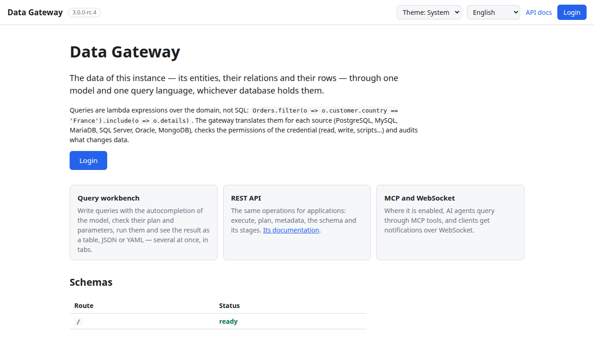
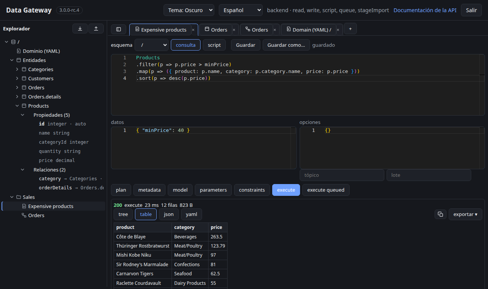
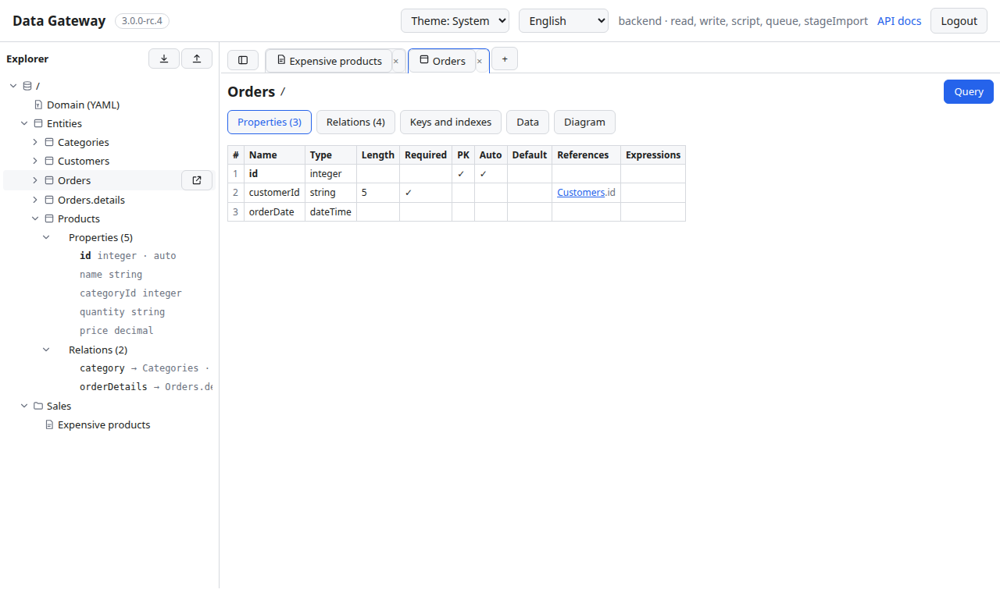
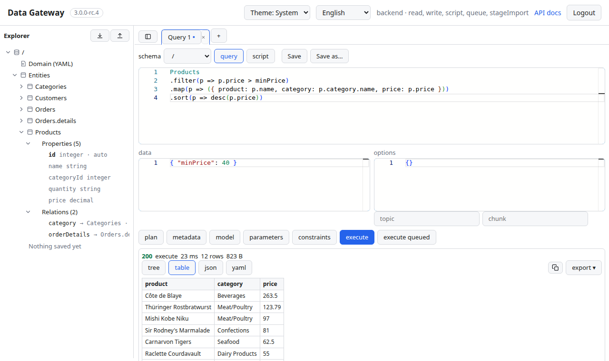
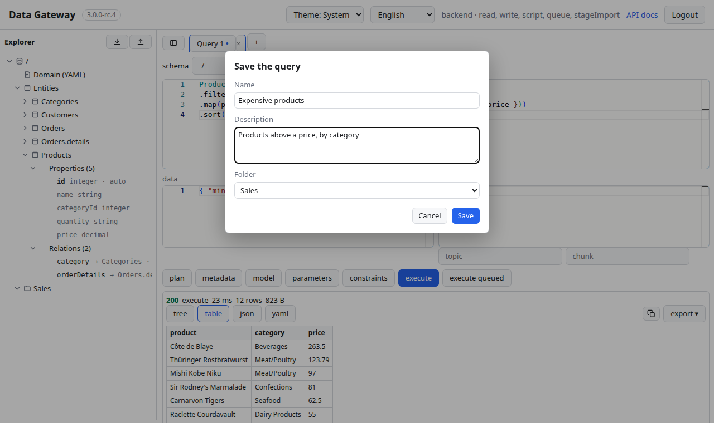

UI¶
A step by step tour, from the login to a diagram, is in Getting started.
The gateway serves a web interface to explore its schemas and query them: an explorer of the schemas and their entities, the form of each entity, query tabs with the autocompletion of the domain, saved queries and diagrams of the domain. It is useful to try queries, to learn the language and to check what an agent does through MCP.
It is at http://localhost:8080/ui/ (with basePath: /data-gateway, at /data-gateway/ui/). It is served by the
same http transport and calls its REST API with the credential that is entered: it has no other access.
Pages¶
Home. What the Data Gateway is, its version, the schemas of the instance with their state (ready, error, …), a
link to the API documentation (Swagger) and the Login button.

Login. The authentication of the instance and the credential:
| Authentication | Asks for |
|---|---|
| API key | the header (default X-Api-Key) and the key |
| Bearer token | the token |
| Basic | the user and the password |
| None | nothing |
The Show / Hide button shows what was typed. The credential is checked against a schema (/whoami): a wrong one
says so and stays on the page. The credential is kept only in that browser tab: closing it or reloading forgets
it, and it is never stored.

Queries. The workspace, after the login: at the top, the name and permissions of the credential, the API docs and Logout (back to the home page).
At the top of every page there are two selectors:
- Theme: System (as the operating system), Light or Dark.
- Language: English, Español, Português, Français, Italiano, Deutsch, Nederlands, Català, Galego, Euskara.
Both are remembered by the browser.

Explorer¶
On the left, the schemas of the instance. It can be resized by dragging its edge and hidden with the panel button of the tab bar. For each schema:
- Domain (YAML). The domain of the schema (entities, properties, relations, keys, enums) in a read-only editor, with syntax highlighting, search and folding. It shows only the domain: never the sources, the connections nor the rest of the configuration.
- Entities. Each entity unfolds into:
- Properties, with their types (the primary key in bold);
- Relations, with the related entity and the cardinality (
customer → Customers · N — 1); the Open button of a relation opens the related entity. The Open button (↗) of an entity, a double click or Enter open its form.
- What is saved in the schema: folders, queries and diagrams (below).

Entity form¶
Like a table in a database IDE, in its own tab, with these sections:
| Section | Shows |
|---|---|
| Properties | each property: type (or enum), length, required, primary key (and unique), auto increment, default, the entity and property a foreign key references (a link to it), and its read / write expressions |
| Relations | its relations (name, type, entity, from, to, cardinality, weak) and Referenced by: the relations of other entities that point to it; each entity is a link to its form |
| Keys and indexes | primary key, unique key, indexes with their fields, constraints with their message and condition |
| Data | its rows in a table, read only, 50 per page, with Previous / Next; they can be copied and exported like any result |
| Diagram | the entity and its neighbours |
The Query button opens a query tab with Entity.page(1, 10).



Queries¶
Each query is a tab, with its own schema, text, data, options and result; switching tabs loses nothing. A tab is opened with +, from an entity (Query) or from a saved query, and closed with its ×.
- Editor with the autocompletion of the schema's domain (entities, properties, relations and functions) and the
errors of λORM marked in the text while typing. Mode: query or script (scripts only when the schema has them
enabled and the credential has
script). - Data and options (JSON), and for queued executions the topic and the chunk.
- Actions:
plan,metadata,model,parameters(fills the data with the query's variables),constraints,execute(Ctrl+Enter),execute queuedand, in script mode,execute script. An action the credential cannot use is disabled, and its tooltip says why. - Result: status, operation, time, rows and size, and four views: tree, table (when the result is a list
of rows), JSON and YAML. The tree and the table show up to 200 rows; the exports have all of them.
- The copy icon copies what is shown (the table as tab-separated text, ready to paste in a spreadsheet).
- Export downloads the whole result as JSON, YAML or TXT (tab-separated).
- History of the last queries of each schema, to bring one back.



Saved queries and diagrams¶
The + of a schema or of a folder adds:
- New folder. Folders nest, to organise what is saved.
- New query. A query tab whose folder is that one.
- New diagram. See Diagrams.
Each saved item has a name and a description (shown when the pointer is over it). Its row has Edit (name, description and folder) and Delete (with confirmation; a folder takes what it holds). Items are moved by dragging them onto a folder or onto the schema. Two items of the same kind cannot have the same name in a folder.
A query tab has Save (Ctrl+S) and Save as…: the first save asks for the name, the description and the folder. A • in the tab marks changes that are not saved; once saved it says saved. Opening a saved query that is already open goes to its tab.

Diagrams¶
A diagram of the domain shows the chosen entities as boxes, with their properties, types, PK and FK (the required ones in bold), and the relations as lines with their cardinality (1 — N, 1 — 1); an inheritance is a dashed line.
New diagram asks for the name, the description, the folder and the entities: they are searched, checked one by one, or completed with Add their neighbours (the entities related to the chosen ones).

In a diagram:
| Action | How |
|---|---|
| Lay out | automatic when it opens (the boxes are placed by ELK); lay out again returns to it |
| Move a box | drag it |
| Move a line | drag it sideways; its ends stay on the rows of the fields it joins; a double click puts it back |
| Remove an entity | the × of its box (shown when the pointer is over it), or click the box and press Delete |
| Add or remove entities | Entities… |
| Names of the relations | relation names |
| Only the names of the entities | names only |
| Zoom and move | the mouse wheel; drag the background; fit shows it all |
| Open an entity | double click its box |
| Export | SVG or PNG |
The diagram is saved (Save or Ctrl+S) with the place of every box and line, the names option and the entities.

Where it is saved¶
What is saved (folders, queries, diagrams) stays in the browser, in its IndexedDB, separated by gateway and by credential: what one credential saves is not seen with another. Only the name of the credential is used for this, never its secret.
- It is in that browser on that device: another browser or another device doesn't see it.
- It goes if the site data of the browser is cleared. The browser is asked to keep it, and the explorer exports everything to a JSON file (⤓) and imports it back (⤒), adding to what there is or replacing it: a backup, a way to move it to another browser or to share it with someone.
- In a browser that doesn't allow storing (some private windows), the explorer says so: what is saved lasts until the page is closed.
In your own application¶
The UI is built with @lambdaorm/ui, a library of React components
that any web application can use against a Data Gateway:
import { Workspace } from '@lambdaorm/ui'
import '@lambdaorm/ui/styles.css'
<Workspace
baseUrl="https://gateway.example.com" // the http transport of the gateway
headers={() => ({ 'X-Api-Key': key })} // how to authenticate; the library keeps no credential
locale="es"
theme="dark"
workspaceKey={`gateway.example.com|${user}`} // separates what is saved
/>
| Component | What it is |
|---|---|
Workspace |
the whole workspace: explorer, entity forms, queries, saved items and diagrams |
QueryWorkbench |
one query editor with its actions and result |
QueryTabs |
several workbenches in tabs |
DomainDiagram |
a diagram of the domain (an entity and its neighbours, the whole model, or chosen entities) |
EntityView |
the form of an entity |
ResultViewer |
a result as tree, table, JSON or YAML, with copy and export |
What is saved can go to another place than the browser by giving store (a WorkspaceStore, for example a backend of
your own).